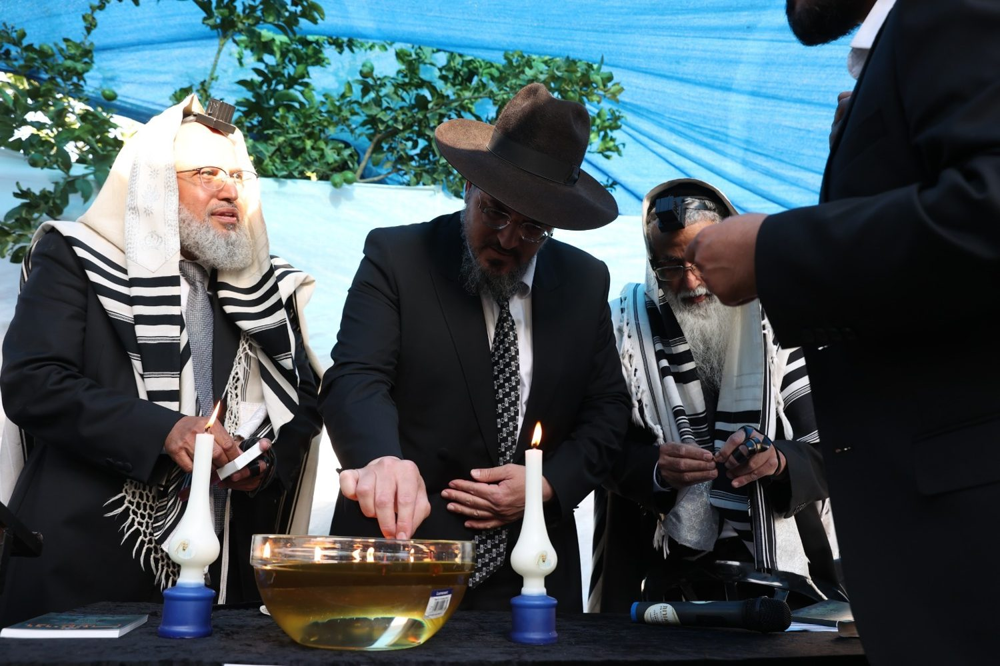
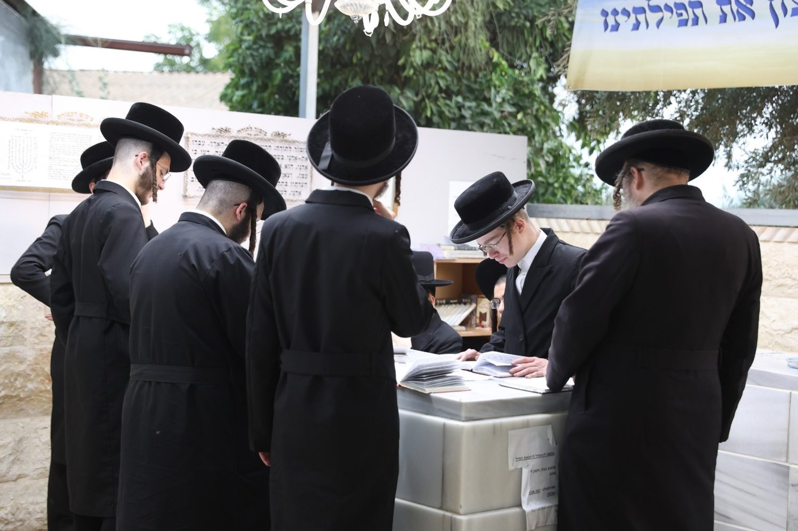
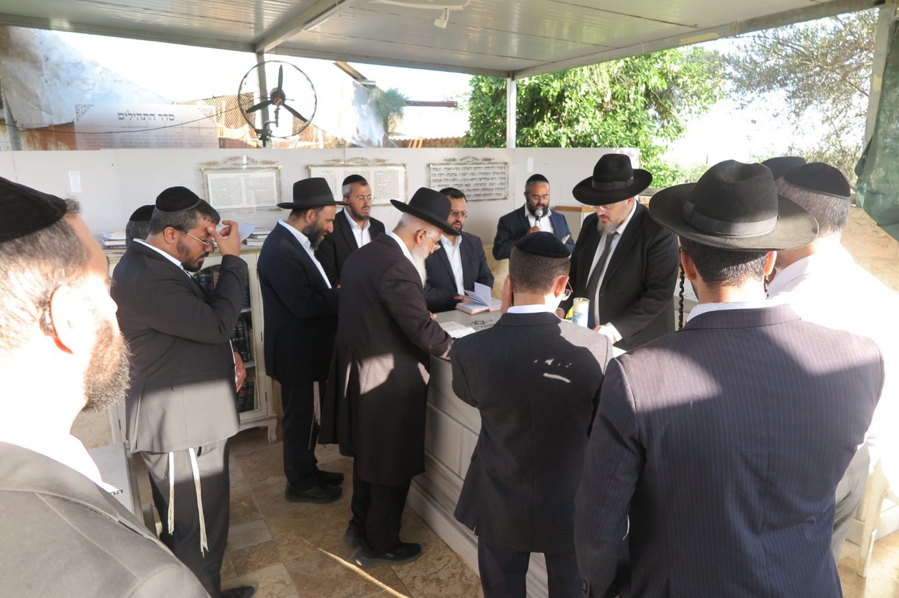
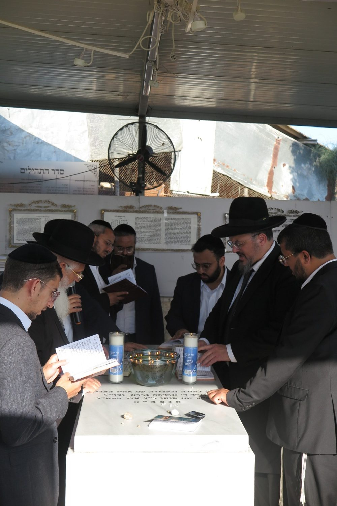
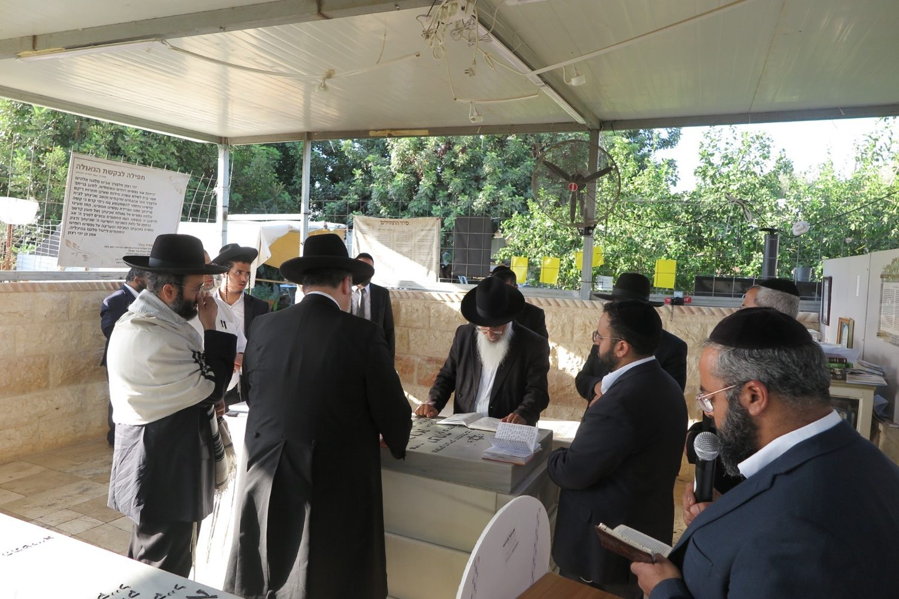
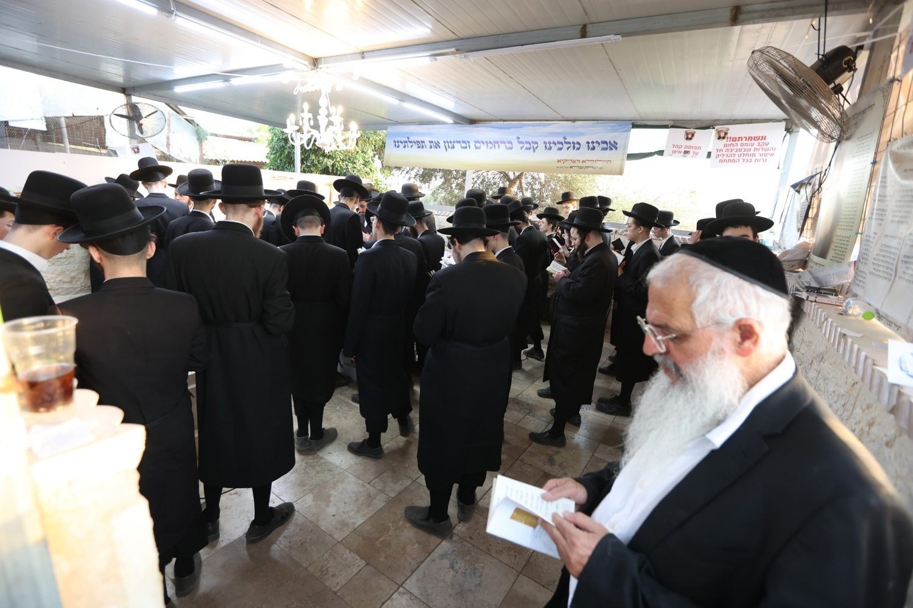
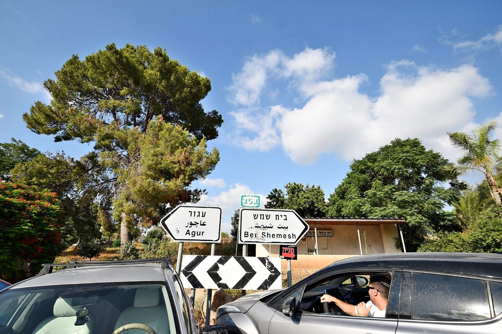
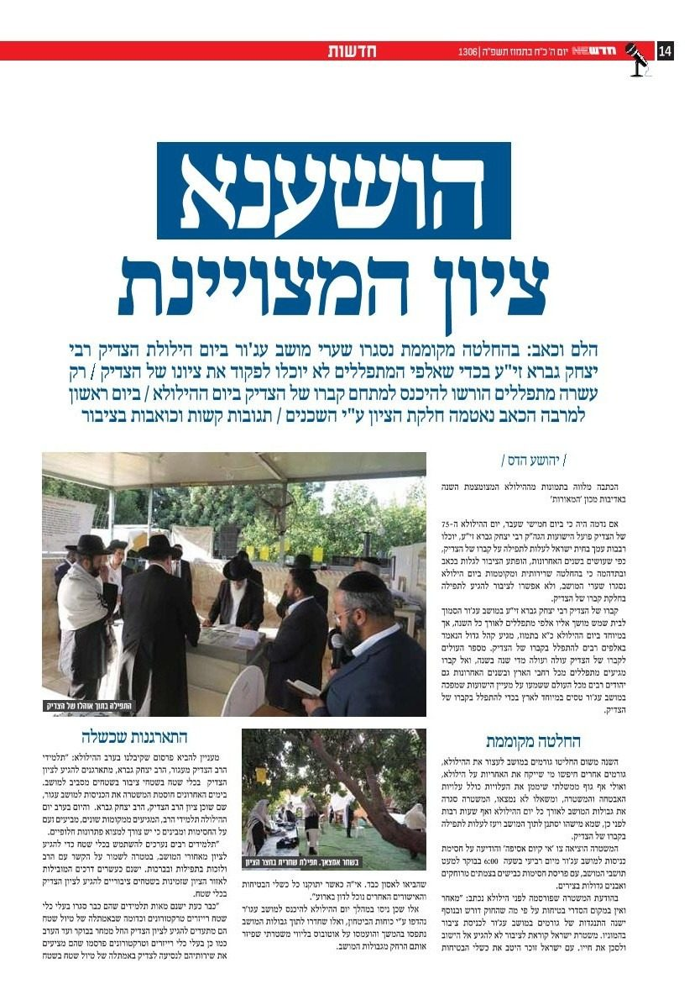

ההילולא לאורך השנים
גלריית ההילולא
מדי שנה, בכ״א בתמוז, נאספים אלפים מכל קצוות הארץ לציון פועל הישועות מעגור בעג׳ור. אלו רגעים מההילולא לאורך השנים.
 המוני בית ישראל · ליל ההילולא
המוני בית ישראל · ליל ההילולא
המקום הקדוש
הציון הקדוש
ציונו של הצדיק בחצר ביתו בכפר עג׳ור, ליד בית שמש.


העבודה שבלב
הדלקת נרות ותפילה
נרות לזכר הצדיק, תפילה והשתטחות על הציון.
 הדלקת נרות
הדלקת נרות
 תפילה בדמע
תפילה בדמע
 השתטחות על הציון
השתטחות על הציון
 נרות לזכרו
נרות לזכרו

הדלקת נר
נרות על הציון עולים לציון
עולים לציון

סביב הציון דברי התעוררות
דברי התעוררות
קידוש שם שמים
המוני בית ישראל
אלפים מכל העדות והחוגים — כולם כאיש אחד בלב אחד.


בזכות התורמים
מעמד התפילה וההקדשה
מסירת שמות לתפילה והקדשות על הציון — בזכותכם מתקיים הכול.

בהיערכות מרובה
הכנות והכנסת אורחים
היערכות נרחבת והכנסת אורחים לכל הבאים לציון.

קבלת הקהל
היערכות לקראת ההילולא חלוקה לקהל
חלוקה לקהל

הכנסת אורחים
בדרך לציוןההילולא בכותרות
בתקשורת
ההילולא וציון הצדיק זוכים לסיקור בעיתונות.

📷 תמונות מארכיון ההילולות בעג׳ור לאורך השנים. יש לכם תמונות נוספות? שלחו אלינו.